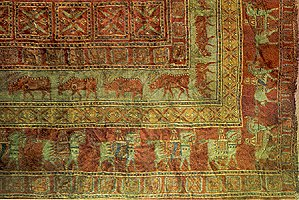

تاريخچه فرش

اولين فرش به احتمال زياد بوسيله افراد چادر نشين برای فرش کردن کف خاکی چادرشان بافته شده بود. ولی امکان اينکه فرش بوسيله مصريها، يا چينيها و يا حتی بوسيله افراد ديگر اختراع شده باشد است. و حتی امکان اينکه تمام اين مردم فرش را خودشان اختراع کرده باشند بدون اينکه با هم ارتباط و يا تماسی داشته باشند است.
ما مطمعاً هستيم که فرش بافی به بالاترين حد خود در پنج قرن قبل از ميلاد رسيده بود. اين بوسيله باستان شناسان روسی رودنکو و گريازنوف در سال 1949 در دره پازيريک، تقريباً 5000 فوتی کوههای التايی کشف شده و به نام فرش "گره دار" معروف است.
فرش پازيريک نمونه کمياب و زيبايی است که با تکنيک بالا بافته شده است، فرش پازيريک که 2400 يا 2500 سال از عمر آن ميگذرد در مقبره يخ زده رئيس سيتها در مغولستان که بصورت بسيار خوب نگهداری شده بود پيدا شد.
در گذر تاريخ ايران صنعت و پيشه فرشبافی بصورت يک هنر و مهارت خاص درآمده است.
موقعی که کوروش کبير در سال 539 قبل از ميلاد کشور بابل را فتح کرد، صنعت و هنر فرش را به کشور خود معرفی کرد. گفته شده است که در آرامگاه کوروش که در پرسپوليس بخاک سپرده شده است، با گرانبهاترين فرشها پوشيده بود. حتی قبل از او هم مردم صحرا نشين در مورد فرش بافی گره ای اطلاعاتی داشتند. آنها از گله های گوسفندان و بزهای خود پشم خوب و بادوام برای کار خود ميگرفتند.
اولين مدرک موجود در رابطه با موجوديت فرش در نوشته های چينيها مربوط به سلسله ساسانيان که در سال 224 تا 641 بعد از ميلاد است ميباشد. در سال 628 ميلادی امپراطور هراکليس مقداری فرش بعد از پيروزی به شهر تيسفون که پايتخت ساسانيان بود آورد. موقعی که در سال 637 ميلادی عربها به شهر تيسفون غلبه کردند، و شهر را غارت کردند مقدار قابل توجهی فرش بود که يکی از آنها فرش باغی مشهوری بود بنام " موقع بهار خسرو". اين فرش در تاريخ بنام گرانبها ترين فرش بوده است. فرشهايی که در موقع سلطنت خسرو اول که در سال (531 - 579) بود بصورت 90 فوت مربع بافته ميشد، که مورخان عرب اينگونه توصيف کرده اند: گوشه های آن تختی باشکوه از گلهای آبی، قرمز، سفيد، زرد و سبز است; رنگ زمينه آن کپی از زمين به رنگ طلائی، سنگهائی به شفافيت کريستال که به باطل تصوری از آب است، گياهان با حرير و ميوه ها با رنگ سنگی شکل گرفته اند، ولی متاًسفانه عربها اين فرش گرانبها را به قطعات کوچک بريده و جداگانه فروخته اند.
بعد از دورهً سلطه خلفای عرب، يک نفر از قبايل ترک، بنام سلجوق ايران را فتح کرد. سلطه سلجوقيان (1038 - 1194 ) به لحاظ تاريخ فرش در ايران مهم است. زنان سلجوقی تبحر خاصی در بافتن فرش با گره های ترکی داشتند، در استانهای آذربايجان و همدان که بمدت زيادی تحت نفوذ سلجوقيان بود،از گره های ترکی در اين مدت استفاده می شد.
حمله مغولان (1220 - 1449) اولين حمله وحشيانه به ايران بود، اما بعد از چندی آنان تحت نفوذ ايرانيان قرار گرفتند. شهر تبريز، متعلق به رهبر ايلخانيان، غازان خان (1295 - 1304)، با فرشهای گرانقيمت فرش شده بود. فرمانروای مغولان شاهرخ (1409 - 1446 ) که در بازسازی آنچه از حمله مغولان ويران شده بود به تشويق کردن و دلگرم کردن تمام هنرمندان و صنعتگردان سرزمين و کشور پرداخت. اما قاليبافی در اين دوران به شکلی خيلی ساده که بيشتر نقشهای هندسی داشت تمام می شد.
شايد مهمترين تاريخ در صنعت فرش در ايران مربوط باشد به دوره فرمانروايان صفويه(1499 - 1722 ). براستی و حقيقتا که محکمترين دليل و گواه اين هنر و صنعت به اين دوره برميگردد. تقريبا 1500 اثر حفظ شده در موزه ها و کلکسيونهای سراسر دنيا موجود است. در ايران در دوره فرمانروائی شاه عباس (1571 - 1629)، تجارت و هنر و صنعت شکوفا شد. شاه عباس به تشويق و دلگرم کردن مردم به تماس و مبادله با اروپا بود و پايتخت خودش را که اصفهان بود به يکی از مجلل ترين و عظيم ترين شهرهای ايران درآورد. او همچنين يک کارگاه بزرگ برای فرش ها درست کرد که هنرمندان در آنجا کار کنند تا بهترين و باشکوه ترين نمونه های فرش را ببافند. بيشترين اين فرشها از ابريشم با رشته های طلا و نقره که تزئين کننده آنها بود بافته شده بودند.
دوره کارگاه های فرش در ايران با هجوم افغانها(1722) به پايان رسيد. افغانها تا زمانی که (1736) سلطه آنها در ايران بود اصفهان را از بين بردند، تا اينکه يک سالار جوان از خراسان، بنام نادر خان شاه ايران شد. در تمام مدت فرمانروائی نادر شاه تمام وقت و نيروی آن صرف جنگيدن با افغانها، ترکها و روسها را گذشت. در اين دوره و تمام دوران ياغی گری و آشفته ايران بعد از مرگ او(1747) هيچ فرشی که ارزشی داشته باشد بافته نشد، و اين رسم و سنت بتنهائی بوسيله افراد چادر نشين و هنرمندان اين صنعت در شهرهای کوچک دنبال ميشد.
در آخرين ربع قرن نوزدهم و در زمان فرمانروايان قاجار اين شغل دوباره پا گرفت. صنعت فرش با فرستادن آن به اروپا از تبريز به استانبول دوباره رونق گرفت. در اواخر قرن نوزدهم ميلادی بعضی از شرکتهای اروپائی و آمريکايی به ايران آمدند و اين هنر و صنعت را به بازارهای کشور خودشان فرستادند.
امروزه، بافتن فرش به گسترده ترين هنر دستی در ايران مبدل شده است، و همينطور در خارج از کشور هم بخوبی شناخته شده است. فرشهای ايرانی امروز از شهرت و اعتبار خاصی که به خاطر رنگ و تنوع و الگوهای گوناگونشان، برخوردار است.
بازگشت
|